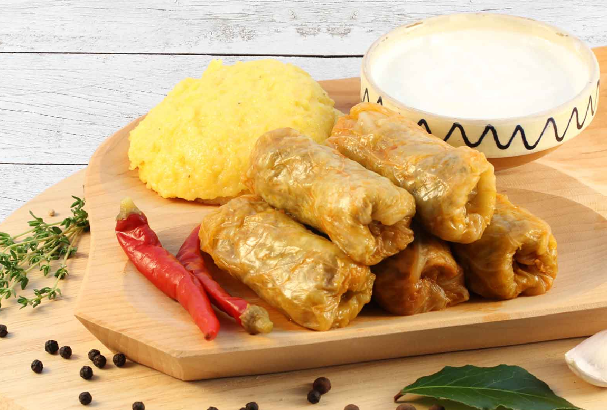

Kåldolmar med polenta (majsgröt)
Gör kåldolmar på traditionell rumänskt vis med surkålsblad
Ingredienser (4-port.)
- 20 st. surkålsblad
- 1 kg blandfärs
- 3 msk ris
- 30-40 st. hela pepparkorn
- 3 citroner
- 1/2 kg krossade tomater
- 1/2 kg rökt bog
- 4-6 lagerblad
- Salt och peppar efter smak
Så här gör du
- Blanda blandfärsen med ris, salt och peppar
- Hacka den rökta bogen i lagom små bitar
- Lägg blandfärsmixen i var sin kålblad och linda dessa omsorgfullt så att de inte lossnar under kokningen
- De hårdare kålbladen ska du hacka lagom grovt och lägga tillsammans med hackad rökt bog, lagerbladen och de hela pepparkornen bland kåldolmarna
- Koka allting i 2 timmar, i 2 litter vatten, där du pressar citronsaften och blandar i de krossade tomaterna. Fyll på med mer vatten vid behov.
Serveringsförslag